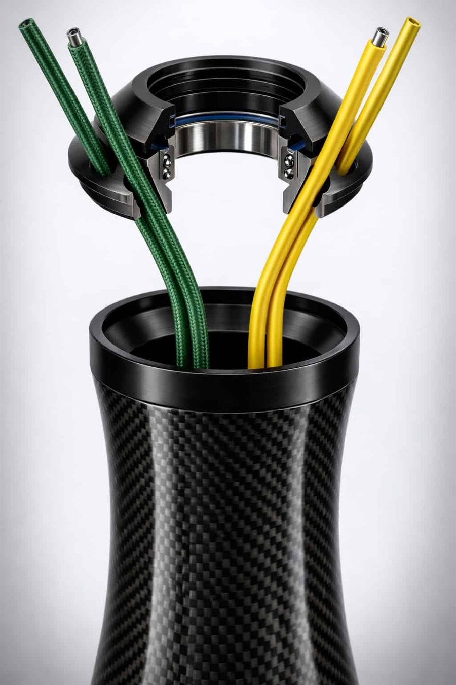

點擊放大
培林外內走線（Outside Bearing）
2026
First S561A（碗座外緣 4 孔走線）
關鍵設計密碼：將上培林縮小至 Ø39mm（D390），裝於 Ø52.2mm 鋁合金上碗中央，騰出外圍環壁開設 4×Ø5.8mm 穿線孔，徹底解耦培林與線管。
頭管規格ZS52/28.6 上 ｜ IS52/40 下
上培林尺寸Ø30.2 × Ø39 × 6.5 (D390)
線管路徑培林外緣 4 × Ø5.8mm 孔
重量 / 堆高126 g / 17.2 mm
換培林免斷油管✓ 是（完全免剪免排氣）